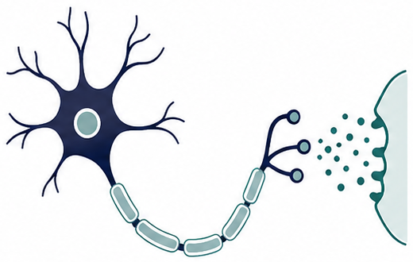
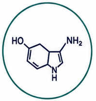
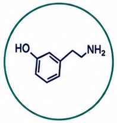
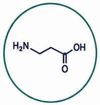
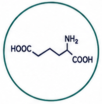
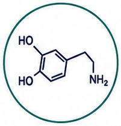
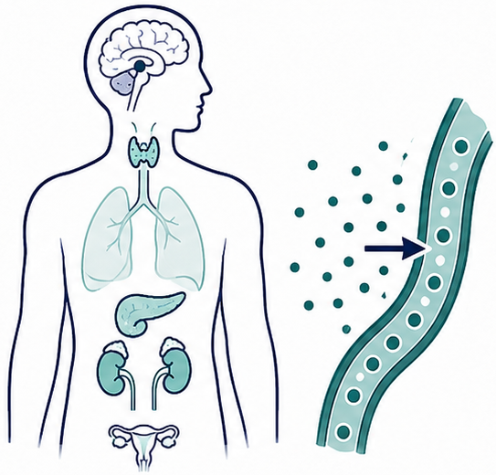
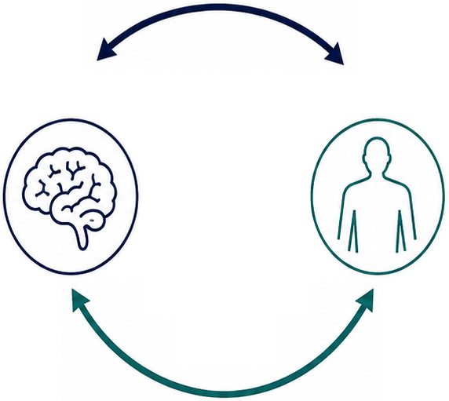
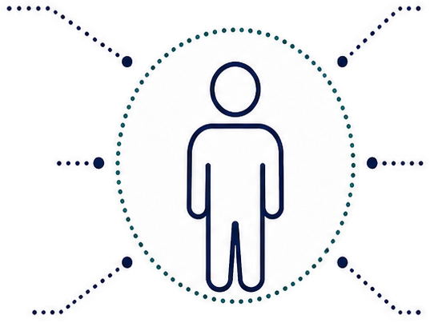

A) SLEEP FEATURES
- Circadian alignment
- Sufficient duration
- Sleep continuity
- Deep sleep
THE CHEMICAL MESSENGERS OF THE BRAIN

Neurotransmitters are chemical messengers released by neurons to transmit signals across synapses.

Serotonin
Dopamine
GABA
Glutamate
NorepinephrineTHE BODY’S SYSTEMIC CHEMICAL SIGNALS

Hormones are chemical messengers released by endocrine glands and tissues and carried through the bloodstream to regulate whole-body functions.
DISTINCT PATHWAYS, COORDINATED REGULATION
| NEURO | FEATURE | HORMONES |
|---|---|---|
| Source: neurons | Source | Source: endocrine glands & tissues |
| Route: synapse | Route | Route: bloodstream |
| Speed: fast | Speed | Speed: slower, longer-range |
| Main role: rapid neural signaling & regulation | Main role | Main role: systemic coordination & adaptation |

NEUROSLEEP SUPPORTS NEUROTRANSMITTER AND HORMONE BALANCE
EXERCISE SUPPORTS NEUROTRANSMITTER AND HORMONE BALANCE
WHOLE-BODY FUNCTIONS SHAPED BY SIGNALING BALANCE

DAILY FUNCTION, RESILIENCE, AND QUALITY OF LIFE
HOW SIGNALING CHANGES ACROSS THE DAY
Cortisol rhythm promotes wakefulness, alertness, and readiness.
Dopamine / norepinephrine support focus, motivation, performance, and activity.
Adaptive signaling stimulates energy use, improves fitness, and drives beneficial stress responses.
Light exposure drops, arousal decreases, and parasympathetic activity increases.
Melatonin, GABA, growth hormone support deep sleep, repair, and restoration.